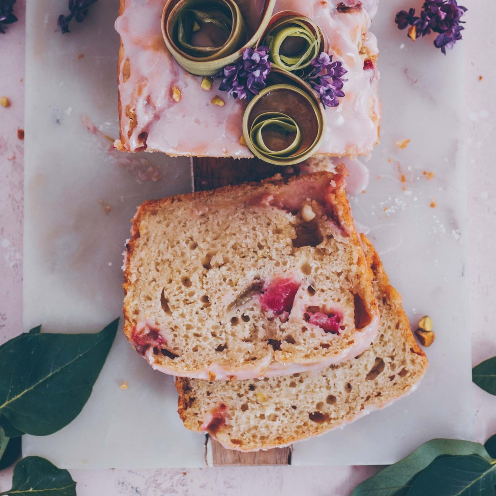

Odin Recipes
Vegan Rhubarb Yogurt Cake

Description
Perfect sweet and sour cake for spring or summer party. (decoration optional)
Ingredients
- 200g plant based joghurt e.g. coconut/soy
- 100 ml sparkling water
- juice and zest of 1 organic lemon
- 80g sugar
- 100g vegan butter melted
- 300g spelt flour
- 1 tsp baking soda
- 1 tsp baking powder
- 1 Tbsp apple cider vinegar
- 50 gr vegan white chocolate
- 120 gr rhubarb
- 1 Tbsp flour
Instructions step by step
- Mix the yogurt, water, lemon, sugar and melted butter in a bowl.
- Sift the flour into a bowl, add the baking soda and baking powder.
- Add to the yoghurt / butter mixture and mix in, do not stir too much so that it stays nice and airy. Finally stir in the apple cider vinegar.
- Cutting the rhubarb into pieces, peeling is not necessary. Mix with 1 tablespoon of flour.
- Roughly chop the chocolate and carefully fold it under the dough with the rhubarb.
- Grease and flour a baking tin (25 cm), fill in the dough.
- Heat the oven to 180 ° and bake the cake for about 40-46 minutes (make a chopstick test).